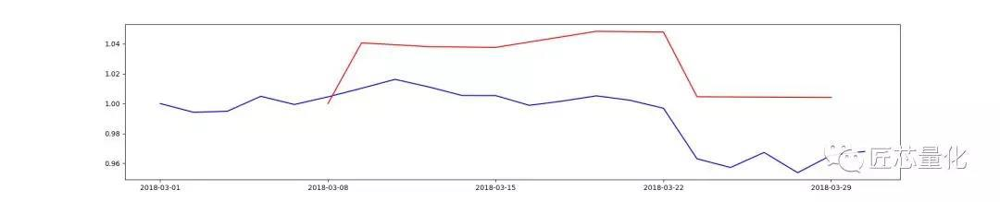
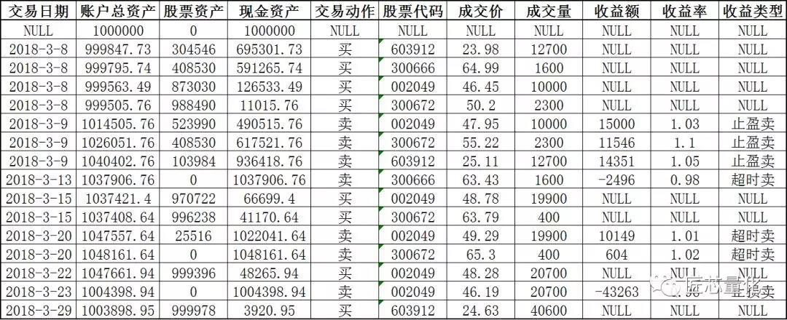
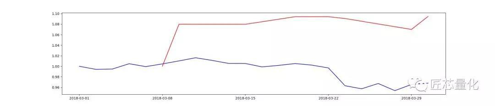
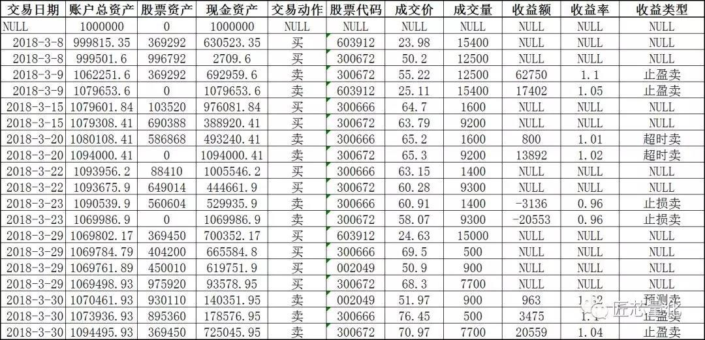

作者：Tushare社区用户
当我们的经验和策略通过代码的方式实现时，除了一些机器学习的评估方法，还需要通过模拟交易的方式来回测整个策略。策略整体在市场中的表现效果如何，该如何用量化的手段来评估，则是本篇要向大家介绍的内容——模拟交易与回测。
话不多说马上进入正题，我们现在要做的，就是构建一套自己的模拟交易系统，并用这套系统来回测各种策略。为了让本文更接地气，作者不打算画各种程序流程图或拓扑图等，这样的 “PPT Style” 太不接地气了，我们换成以一个交易员的视角来思考问题。
股市的交易规则是实时的撮合交易，我们没办法也没必要做到实时的撮合交易，所以在模拟交易系统里，交易规则要简化为：以下单当日的收盘价作为成交价。实际上，各大量化平台也是这么做的，做得更细致一点的，可以设定一个参数：“滑点”——来控制模拟交易和实盘交易的误差。
有了这样一种简化，模拟交易就变得十分简单了——复杂的撮合交易机制简化成了以股票行情的收盘价作为成交价，剩下的只是简单的“买”和“卖”的交易动作。作为交易的基本动作，号主专门用一个程序来封装，代码如下：Operator.py
import pymysql.cursors
import Deal
def buy(stock_code, opdate, buy_money):...
def sell(stock_code, opdate, predict):...
可见只是封装了 buy 和 sell 两个函数而已。
在buy函数里我定义了几个参数，分别是股票代码、交易日期、交易金额；在sell函数里定义的几个参数分别是 股票代码、交易日期、交易量、交易类型（主动卖或止损卖）。这几个参数见名知意，这里就不多解释了。
现在我们有了模拟交易的两个基本操作函数，但交易是双向的，我们买和卖的结果体现在哪里呢，这就需要一个资产账户来记录。细心的读者肯定发现了，上面的截图里引入了两个包，一个是数据库框架pymysql，另一个则是Deal包，这其实是号主自定义的一个python程序，也就是模拟交易中的资产账户。先来看一下这个Deal文件到底是什么：
import pymysql.cursors
class Deal(object):
cur_capital = 0.00
cur_money_lock = 0.00
cur_money_rest = 0.00
stock_pool = []
stock_map1 = {}
stock_map2 = {}
stock_map3 = {}
stock_all = []
ban_list = []
...
可见，Deal类封装了一些参数，初始化函数就是为了更新这些参数。实际上，这些参数分别是账户总资产，股票资产，现金资产，股票池，股票资产详情等，整个Deal类就是一份资产账户详单。
关于资产账户的数据架构，底层的实现是mysql数据库，分成两张sql表来实现，一张是账本表（记录每一次的买和卖操作），表结构如下：
库名：stock 表名：my_capital
| 字段名 | 字段类型 | 字段说明 |
|---|---|---|
| capital | DECIMAL(20, 4) | 总资产 |
| money_lock | DECIMAL(20, 4) | 股票资产 |
| money_rest | DECIMAL(20, 4) | 现金资产 |
| deal_action | VARCHAR2(45) | 交易动作 |
| stock_code | VARCHAR2(45) | 股票代码 |
| deal_price | DECIMAL(20, 4) | 成交价 |
| stock_vol | INT(11) | 成交量 |
| profit | DECIMAL(20, 4) | 收益额 |
| profit_rate | DECIMAL(20, 4) | 收益率 |
| bz | VARCHAR2(45) | 备注 |
| state_dt | VARCHAR2(45 | 交易日期 |
| seq | INT(11) | 序号（用作表主键） |
另一张则是持仓表，表结构如下：
库名：stock 表名：my_stock_pool
| 字段名 | 字段类型 | 字段说明 |
|---|---|---|
| stock_code | VARCHAR2(45) | 股票代码 |
| buy_price | DECIMAL(20, 2) | 买入价 |
| hold_vol | INT(11) | 持仓量（单位：股） |
| hold_days | INT(11) | 持仓天数（只计算交易日） |
对于交易来说，只需要持仓股票代码和持仓量即可，买入价是为了测算收益，持仓天数则是为了某些策略用的（比如策略对持仓天数有限制时）。
至此，一个最简单的模拟交易过程就完成了，从交易的角度来看，就是通过buy和sell函数对Deal类（资产账户）里的数据做写操作，比如，买入股票就是扣除现金资产，增加股票资产，同时在持仓表中增加相应记录；卖出股票则是反向操作。
有了上述一套模拟交易过程，接下来我们要考虑的就是策略层面的问题了。从交易的角度来看，策略是整个交易过程的入口，是逻辑和决策层。笔者直接用main函数来写策略了：
if __name__ == '__main__':
# 先清空之前的测试记录
# 建回测时间序列
# 开始模拟交易
for i in range(1, len(date_seq)):
# 选股初始化模块
# 交易预警模块
# 模型训练模块
# 买卖点判断模块（包括但不限于模型的预测结果）
# 仓位管理
# 交易执行模块
# 结果数据可视化模块
代码中简明清晰地展示了号主策略的回测框架：首先清空之前的测试记录，然后取回测时间段内的交易日序列，通过for循环来遍历这个序列，每一次迭代，都是一个交易日，都包含了策略的多个功能模块，上一篇的策略并非全部用到这些模块，未用到的下面以“可选”标记：
选股初始化模块（可选）：这个模块的功能主要是选股，由于涉及的逻辑和计算量可能非常庞大，并非每日执行，可以每隔x个交易日执行一次。
交易预警模块（可选）：当模型的预测存在结构性误差时，往往需要该预警模块来作为买卖点判断的补充，比如大趋势转变，基本面变化，政策变化等。
模型训练模块：在策略中，建模方式分单次建模和推进建模，区别是推进建模每日收盘后会根据最新交易日的数据进行重训练，对于推进建模，该模块是必须的（在上篇的策略中，就是应用的推进建模）。
买卖点判断：包含但不限于模型的预测结果，往往结合其他的逻辑或信号进行判断（比如预警模块给出的信号），最终确定是否买卖。
仓位管理：确定交易股票的配仓（买入金额或卖出股数）。
交易执行模块：即上文详述的模拟交易过程，Operator.py里的buy和sell函数。
结果数据可视化模块：当跑完回测后，给出一个直观的结果（折线图，柱图等）。
接下来，让我们看一下上一篇中的那套portfolio的回测结果。为了跟测试集的时间序列保持连续，现在取2018.03.01~2018.04.01区间的交易日序列作为回测区间。首先来看一下投资组合的市场方向（特征值最小）的收益情况：

图中蓝线代表大盘的收益曲线（收益 = 当日收盘价 / 首日收盘价），在这一个月的回测周期中，大盘指数由 3273 点震荡到 3168 点，投资组合的收益曲线跟大盘趋势基本保持一致，在期末的收益率为 0.39% ，略微跑赢大盘。
接下来再看这套投资组合的账单表：

总计 7 次卖出操作，其中 3 次止盈，3 次超时平仓，1 次止损。从收益情况来看，7 次操作中 5 次盈利，2 次亏损。
作为对比，我们再来看一下投资组合的最大收益方向（次最小特征值）：

可见，投资组合的收益曲线背离大盘。在期末的收益率达到 9.45%，明显跑赢市场。接下来再看这套投资组合的账单详情：

总计 9 次卖出操作，其中 4 次止盈，2 次超时平仓，2 次止损，1 次预测卖。从收益情况来看，7 次盈利，2 次亏损。
与市场方向相比，操作数变多，止盈和止损次数均多于前次。从操作和收益来看也印证了“高风险高收益”的道理。
至此，构建投资组合==>回测验证策略 的流程已经结束。详细代码清单与功能如下（点击这里下载全部代码）：
| 文件名 | 功能 |
|---|---|
| DC.py | 【数据预处理】将本地存储的日基础行情整合成一份训练集。 |
| Model_Evaluate.py | 【模型评估】通过回测+推进式建模的方式对模型进行评估，主要计算查准率Precision，查全率Recall，F1分值，并存入结果表。 |
| Portfolio.py | 【仓位管理】基于马科维茨投资组合理论，计算一段时间序列内投资组合的风险、仓位配比和夏普率，有市场方向和最佳收益方向两种结果。 |
| Deal.py.py | 【模拟交易】封装类，用于模拟交易过程中获取最新的资产账户相关数据。 |
| Operator.py | 【模拟交易】封装函数，用于模拟交易过程中执行买和卖操作。 |
| Cap_Update_daily.py | 【模拟交易】封装函数，用于在回测过程中，每日更新资产表中相关数据。 |
| Filter.py | 【策略回测】封装函数，用于在回测过程中，处理一些简单的逻辑（更新持仓天数，买卖顺序等）。 |
| main.py | 【策略回测】策略的框架，回测的主函数。 |